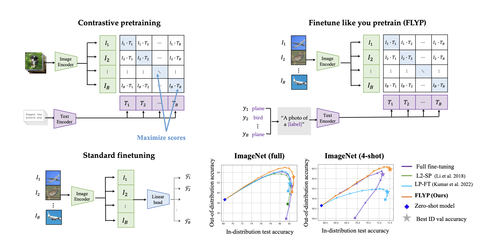
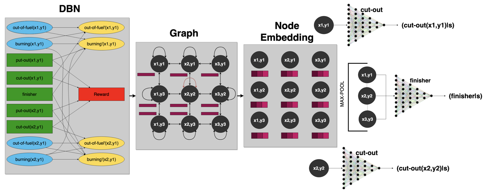
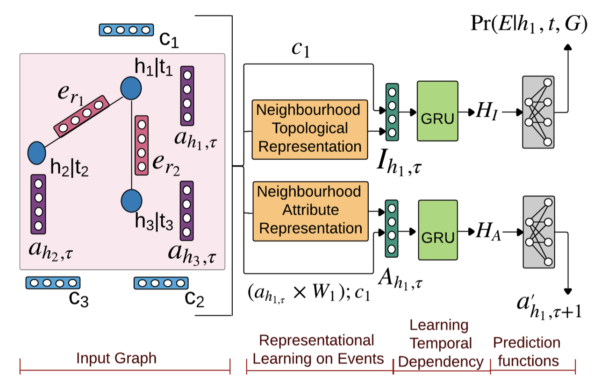
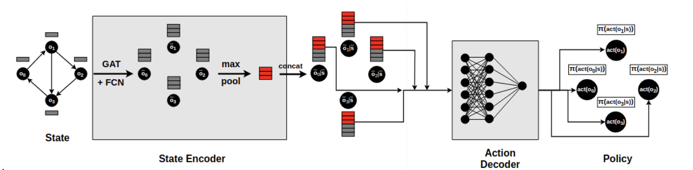
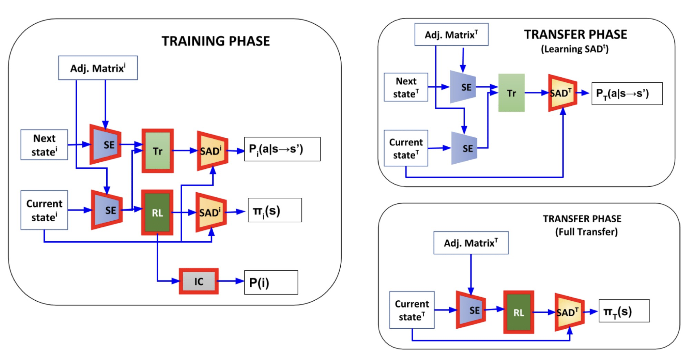

Research
My research interests lie in the intersection of Machine Learning and Reinforcement Learning. I am
particularly interested in the application of RL to real-world problems, such as robotics,
autonomous systems, and decision-making under uncertainty. I have worked on Foundation Models, Large
Language Models (LLM), and CLIP. I am also interested in the development of algorithms that can
learn from limited data and generalize to new tasks.
|
|

|
Finetune like you pretrain: Improved finetuning of zero-shot vision models
Sachin Goyal,
Ananya Kumar,
Sankalp Garg,
Zico Kolter,
Aditi Raghunathan
Computer Vision and Pattern Recognition Conference (CVPR), 2023
arXiv /
Talk /
Github
|
|

|
Symbolic Network: Generalized Neural Policies for Relational MDPS
Sankalp Garg, Aniket Bajpai, Mausam
International Conference on Machine Learning (ICML), 2020
arXiv /
Talk /
Github
|
|

|
Attribute Prediction via Joint Modeling of Multi-Relational Structure Evolution
Sankalp Garg, Navodita Sharma, Woojeong Jin, Xiang Ren
International Joint Conference on Artificial Intelligence (IJCAI), 2020
arXiv /
Github
|
|

|
Size Independent Neural Transfer for RDDL Planning
Sankalp Garg, Aniket Bajpai, Mausam
International Conference on Automated Planning and Scheduling (ICAPS), 2019
arXiv /
Github
|
|

|
Transfer of Deep Reactive Policies for MDP Planning
Aniket Bajpai, Sankalp Garg, Mausam
Conference on Neural Information Processing Systems (NeurIPS), 2018
arXiv /
Talk /
Github
|
Apple
Jan 2023 - Present
|
Siri Info Intelligence Team
Language understanding and search ranking for Siri, Spotlight, and Safari.
|
Amazon AI
May 2022 - Aug 2022
|
RL-based Rightsizing of Redshift Databases
Developed RL methods for database sizing and built a simulator for training RL models.
Advisor: Dr. Murali Narayanaswamy
|
Quadeye
July 2020 - Aug 2021
|
Quantitative Strategist
Developed and managed trading strategies in India and Brazil.
|
Microsoft Research India
Jan 2020 - June 2020
|
Keyword Spotting on Tiny Devices
Built phoneme detection and keyword classifiers for low-memory devices.
Advisors: Prateek Jain and Harsha Vardhan Simhadri
|
University of Southern California
Summer 2019
|
Temporal Knowledge Graphs
Designed a framework for time-series prediction using temporal graph embeddings.
Advisor: Xiang Ren
|
National University of Singapore
Summer 2018
|
Explainable AI for Food Recommendations
Developed a system for explainable food recommendations and conversational Q&A.
Advisor: Prof. Brian Y. Lim
|
Carnegie Mellon University
Aug 2021 - Dec 2022
|
M.Sc in Machine Learning
Machine Learning Department, CGPA: 4.08
Advisors: Prof. Zico
Kolter and Prof. Aditi Raghunathan
|
Indian Institute of Technology Delhi
July 2016 - July 2020
|
B.Tech in Electrical Engineering
CGPA: 9.36/10, Department Rank 5
Advisor: Prof. Mausam
|
|
Conference Reviewer: ICML 2024, ICLR 2024, NeurIPS 2023, ICAPS 2023, ICAPS 2022
|
|
{kind=link}